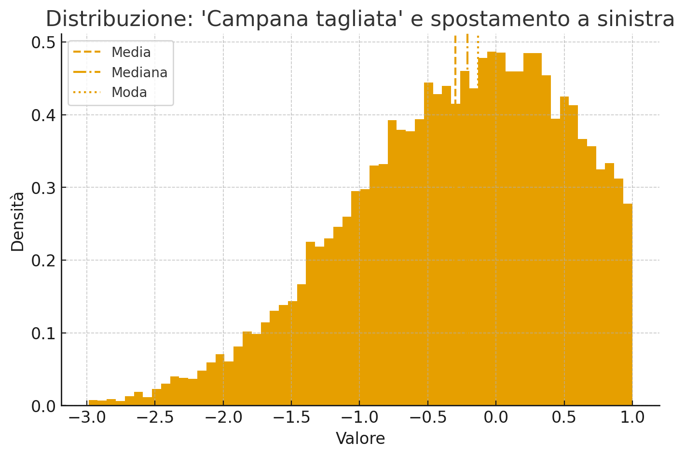
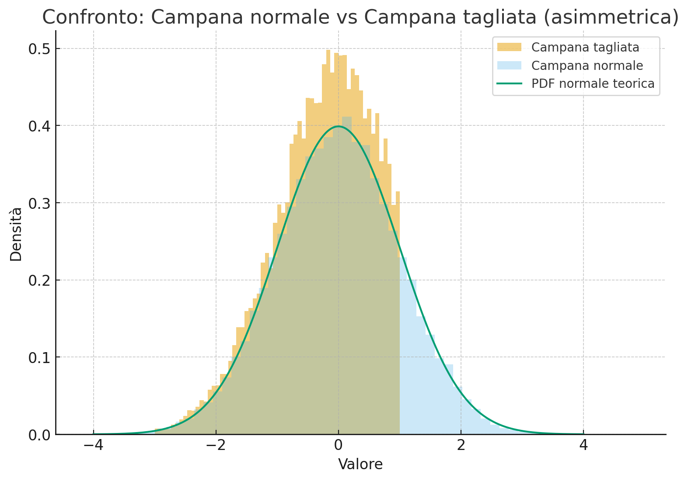
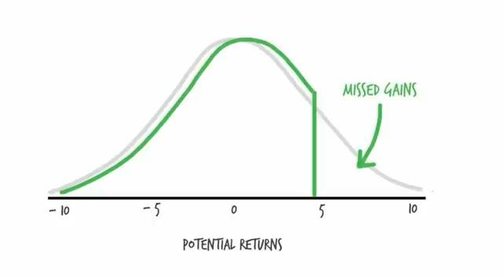
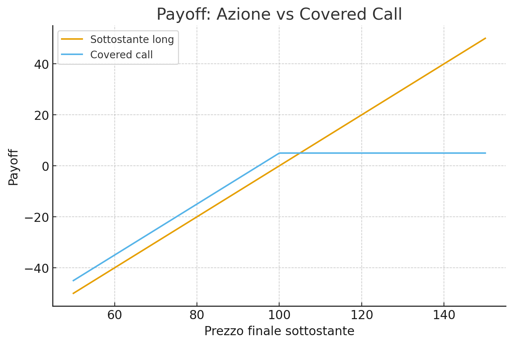

Il grafico mostra come andrebbe una strategia che vende quote del sottostante per ottenere lo stesso dividendo lordo staccato dall'ETF covered call.
Legenda:
| Voce | netto (EUR) | netto (EUR) | Delta - (EUR) |
|---|---|---|---|
| Flussi netti incassati (nominali, no reinvest.) | - | - | - |
| Capitale liquidabile netto (tassa plusvalenza) | - | - | - |
| Totale netto disponibile | - | - | - |
| Data di Stacco | Dividendo Lordo (€) | Dividendo Netto (€) | Quote Vendute | Dividendo Lordo (da vendita) (€) | Dividendo Netto (da vendita) (€) | Differenza tra i netti |
|---|
Un risultato interessante emerso dall'analisi è che la quantità di valore estratto tramite la vendita di call sembra “calibrata” per mantenere il capitale del sottostante sostanzialmente costante nel lungo periodo. Questa non è una coincidenza: deriva direttamente dal principio di assenza di arbitraggio, che è alla base dell'intero pricing delle opzioni (Teoria dei mercati efficienti).
Il premio di una call non può essere superiore al valore atteso dell’upside che l’investitore rinuncia oltre lo strike. In misura risk-neutral questo valore è dato da:
$$ C = e^{-rT}\,\mathbb{E}^{\mathbb{Q}}[(S_T - K)^+] $$
Se fosse possibile ottenere con una covered call un premio sistematicamente maggiore della crescita attesa del sottostante, allora un investitore potrebbe costruire una strategia di arbitraggio priva di rischio: acquistare il sottostante, vendere call “troppo care” e coprirsi con strumenti lineari (futures). Questo genererebbe un profitto certo e immediato, il che violerebbe l'assunzione fondamentale dei mercati finanziari efficienti.
Il mercato quindi “impone” che:
$$ \text{Valore estratto via call} \;\approx\; \text{upside ceduto} $$
Per questo motivo, la distribuzione ottenuta vendendo call non può superare ciò che si otterrebbe vendendo in modo dinamico le quote del sottostante: il premio è tarato per riflettere esattamente il valore della crescita futura ceduta. Allo stesso modo, estrarre più valore del premio equivarrebbe a vendere “troppo” del sottostante, portando inevitabilmente a una riduzione progressiva del capitale.
Il rendimento di una strategia covered call non può superare il rendimento ottenibile liquidando dinamicamente il sottostante, a parità di rischio, perché il prezzo dell'opzione incorpora già tutta l'informazione sul sottostante.
Vendere una call coperta equivale a monetizzare oggi una parte del potenziale upside futuro. Allo stesso modo, vendere progressivamente una quota del sottostante fornisce liquidità immediata in cambio di una riduzione proporzionale della partecipazione alla crescita futura. Il premio della call rappresenta quindi il valore atteso dell'upside ceduto: questo crea una relazione strutturale tra covered call e liquidazione dinamica del sottostante.
Posizione covered call:
$$ \text{Covered Call} = S_0 - C $$
Payoff a scadenza:
$$ \text{Payoff}_{CC}(T) = S_T - \max(S_T - K, 0) = \min(S_T, K) $$
Prezzo della call (misura risk-neutral):
$$ C = e^{-rT}\,\mathbb{E}^{\mathbb{Q}}[(S_T - K)^+] $$
Strategia equivalente tramite vendita dinamica di sottostante:
Occorre vendere una quota \( q \) del sottostante tale che: $$ q S_0 = C $$ quindi la posizione diventa: $$ \text{Synthetic} = (1 - q) S_0. $$
Equivalenza dei valori iniziali:
$$ \text{Covered Call}(0) = S_0 - C $$ $$ \text{Synthetic}(0) = S_0 - q S_0 $$ Imponendo \( q S_0 = C \) segue direttamente: $$ \text{Covered Call}(0) = \text{Synthetic}(0). $$
Interpretazione pratica: il premio della call è pari al valore atteso dell’upside che si rinuncia oltre lo strike. Nessuna strategia covered call può generare un rendimento superiore a quello ottenibile vendendo dinamicamente il sottostante con lo stesso profilo di rischio; se lo facesse, esisterebbe un arbitraggio e i prezzi delle opzioni si adeguerebbero immediatamente.
Nella pratica reale possono emergere differenze dovute a tassazione, costi di transazione, frequenza delle vendite e limiti di frazionamento, ma la relazione teorica di fondo resta valida: la covered call non crea rendimento aggiuntivo, lo anticipa e lo redistribuisce nel tempo.
Le strategie covered call introducono una forte asimmetria nella distribuzione dei rendimenti. A differenza di un asset tradizionale, che tende a seguire una distribuzione normale simmetrica, un ETF covered call mostra una distribuzione troncata a destra.
Questo accade perché la vendita della call limita il potenziale di guadagno (upside oltre lo strike), mentre il rischio di perdita (downside) rimane quasi completamente aperto.
Il risultato è una distribuzione dei rendimenti che non è normale, con conseguente inutilità o distorsione di metriche come deviazione standard, Sharpe ratio e Sortino ratio.

La campana tagliata è tipica dei rendimenti dei covered call. La coda destra è troncata perché l'upside è limitato, mentre la coda sinistra rimane intatta. È la rappresentazione più immediata della perdita del potenziale di rialzo.

Qui vediamo la differenza tra una distribuzione normale e una distribuzione troncata. La curva simmetrica rappresenta un asset tradizionale, mentre quella asimmetrica evidenzia come un covered call limiti i guadagni ma non le perdite.

Questa seconda visualizzazione mostra come la parte destra della distribuzione sia tagliata nettamente. Ciò implica rendimenti più stabili ma un ritorno medio inferiore, poiché i grandi rialzi non contribuiscono più.

L'immagine mostra il payoff di una call venduta: oltre lo strike il rendimento si appiattisce (cap), mentre a sinistra il prezzo può scendere senza limiti. Questo meccanismo è la causa primaria dell'asimmetria tipica dei covered call.